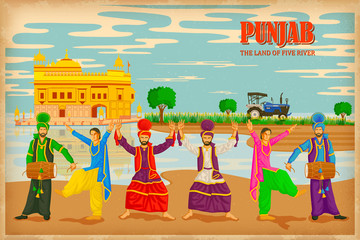

Punjab

Punjab, a vibrant and culturally rich state in northern India, is often referred to as the "Land of Five Rivers." Its name is derived from the Persian words "panj" (five) and "ab" (water), highlighting the rivers Beas, Ravi, Sutlej, Chenab, and Jhelum that once flowed through the region. Known for its fertile plains, Punjab is considered the agricultural heart of India, playing a crucial role in the country's food production, particularly in wheat and rice. The state's lush green fields and hardworking farmers reflect its reputation as the "Granary of India."
Here are five must-visit places in Punjab:
Golden Temple (Amritsar): The holiest Sikh shrine, known for its stunning architecture and the serene Amrit Sarovar (sacred pool).
Jallianwala Bagh (Amritsar): A historic garden that commemorates the tragic 1919 massacre during India’s struggle for independence.
Wagah Border (Amritsar): Famous for the daily flag-lowering ceremony between India and Pakistan, showcasing patriotic fervor.
Anandpur Sahib: A sacred city for Sikhs, known as the birthplace of the Khalsa and home to the Takht Sri Keshgarh Sahib.
Rock Garden (Chandigarh): A unique attraction featuring sculptures made from recycled materials, located in Punjab’s modern capital.
I am proud to be a punjabi.
Click here to know more